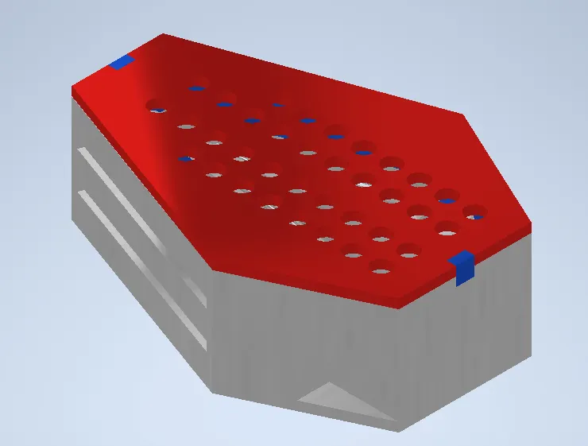
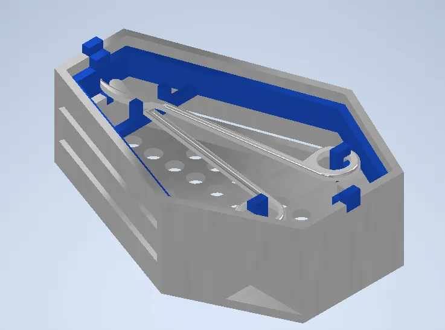
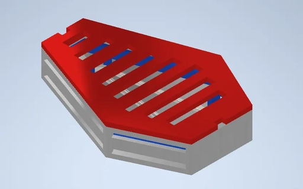

Designed and fabricated a custom sterilization container for automated surgical tool processing, integrating mechanical design with robotic automation using a 12-Arm system. Led the modeling sub-team through iterative prototyping and flight matrix evaluation.
This project involved designing a specialized sterilization container optimized for robotic handling in an automated surgical instrument processing workflow. The container needed to interface with a 12-axis robotic arm while maintaining the sterility and flow requirements of a medical autoclave environment.

Add photo
Add photo
Add photoThe design process began with understanding the operational constraints: the container had to allow clean airflow for sterilization, provide secure tool placement, facilitate drainage, and fit within the spatial envelope of the robotic arm's workspace.
Through iterative prototyping, the team evaluated multiple container geometries using a flight matrix approach — scoring each design variant across criteria including sterilization effectiveness, robotic grip compatibility, tool security during transport, and manufacturing feasibility.
The final prototype successfully demonstrated end-to-end automated surgical tool processing, with the robotic arm reliably picking, placing, and transferring the sterilization container through the simulated workflow. The container design met all sterilization flow requirements while maintaining compatibility with the 12-axis robotic system.